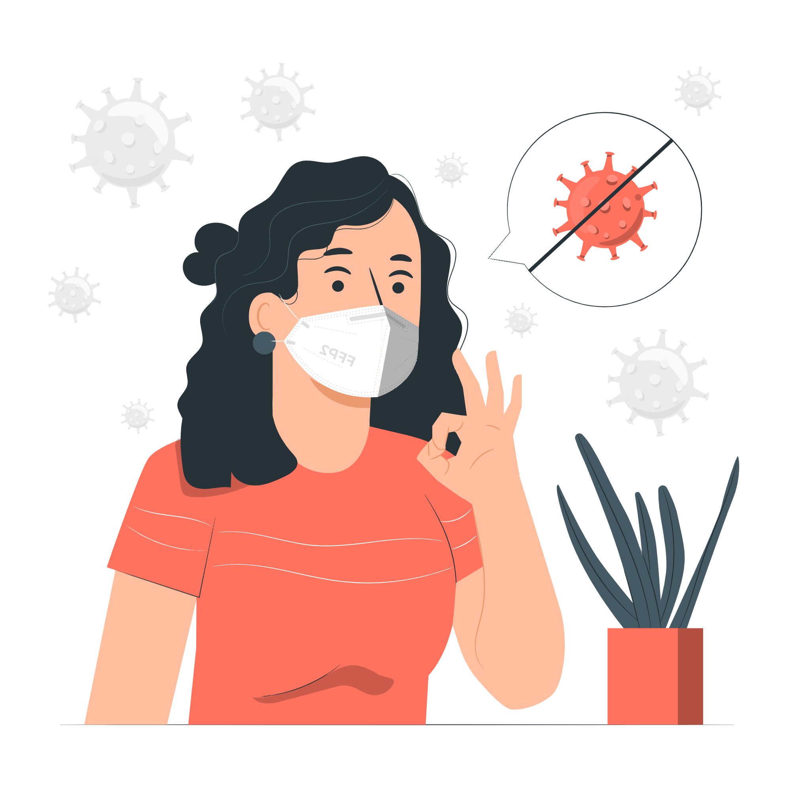

TAPACOP
por un futuro más sano
" />

Somos una empresa dedicada a elaborar tapabocas con materiales orgánicos como lo son las semillas y las cáscaras de las frutas esto con el fin de disminuir el uso de tapabocas convencionales y de alguna manera contribuir al cuidado del medio ambiente. .

Compra nuestro tapabocas organico ahora, solo por hoy un a un precio especial para nuestros clientes.

Nuestro principal objetivo es ser una empresa conocida internacionalmente por la calidad de nuestro producto y por el beneficio que le generamos al medio ambiente con este.
Implementar y ofrecer tapabocas orgánicos con el fin de disminuir el uso de tapabocas quirúrgicos los cuales contaminan el medio ambiente.
Nuestros tapabocas son reutilizablesa diferencia de los quirúrgicos que no se pueden lavar ni desinfectar, porque pierden su funcionalidad al echarle alcohol o algún líquido desinfectante.
Compra ahora nuestros tapabocas, la rentabilidad que ofrecemos a diferencia de un tapabocas quirurgico es mucho mayor al poder reutilizarlo